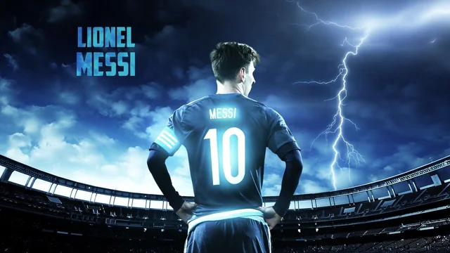

Lionel Andrés Messi also known as Leo Messi, is an Argentine professional footballer who plays as a forward for and captains both Major League Soccer club Inter Miami and the Argentina national team. Widely regarded as one of the greatest players of all time, Messi has won a record seven Ballon d'Or awards[note 2] and a record six European Golden Shoes, and in 2020 he was named to the Ballon d'Or Dream Team. Until leaving the club in 2021, he had spent his entire professional career with Barcelona, where he won a club-record 34 trophies, including ten La Liga titles, seven Copa del Rey titles and the UEFA Champions League four times.[note 3] With his country, he won the 2021 Copa América and the 2022 FIFA World Cup. A prolific goalscorer and creative playmaker, Messi holds the records for most goals in La Liga (474), most hat-tricks in La Liga (36) and the UEFA Champions League (eight), and most assists in La Liga (192) and the Copa América (17). He also has the most international goals by a South American male (106). Messi has scored over 800 senior career goals for club and country, and has the most goals by a player for a single club (672). Messi relocated to Spain from Argentina aged 13 to join Barcelona, for whom he made his competitive debut aged 17 in October 2004. He established himself as an integral player for the club within the next three years, and in his first uninterrupted season in 2008 2009 he helped Barcelona achieve the first treble in Spanish football; that year, aged 22, Messi won his first Ballon d'Or. Three successful seasons followed, with Messi winning four consecutive Ballons d'Or, making him the first player to win the award four times. During the 2011 2012 season, he set the La Liga and European records for most goals scored in a single season, while establishing himself as Barcelona's all-time top scorer. The following two seasons, Messi finished second for the Ballon d'Or behind Cristiano Ronaldo (his perceived career rival), before regaining his best form during the 2014 15 campaign, becoming the all-time top scorer in La Liga and leading Barcelona to a historic second treble, after which he was awarded a fifth Ballon d'Or in 2015.
This page was last edited on 25 October 2023, at 15:48 (UTC). Wikipedia